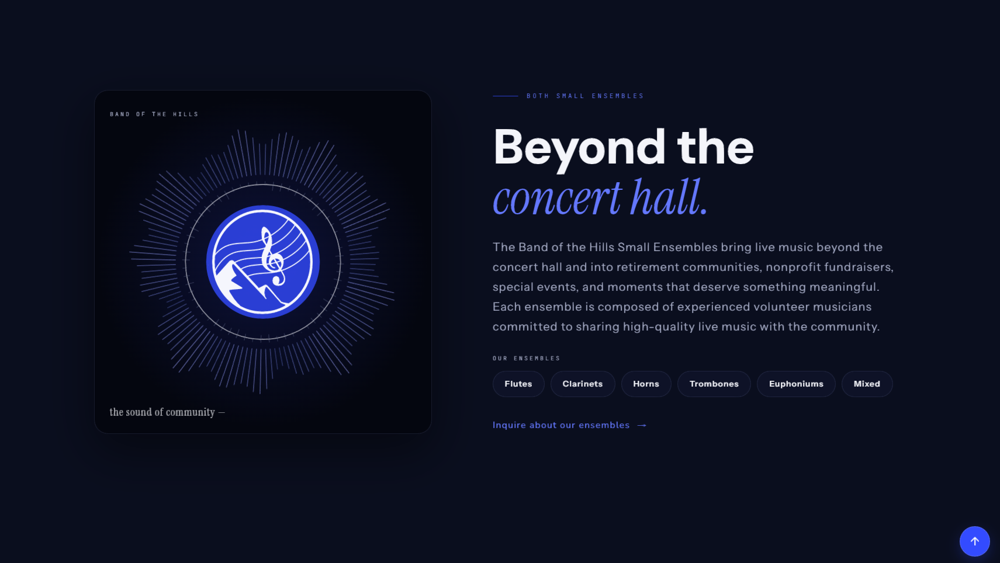
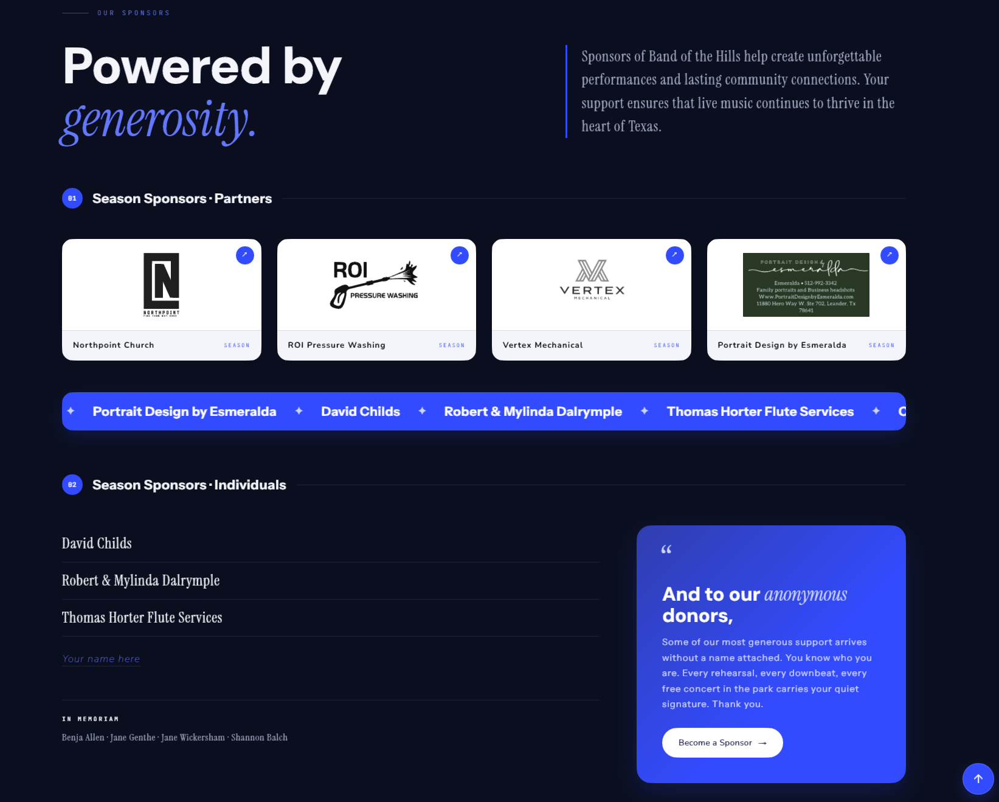
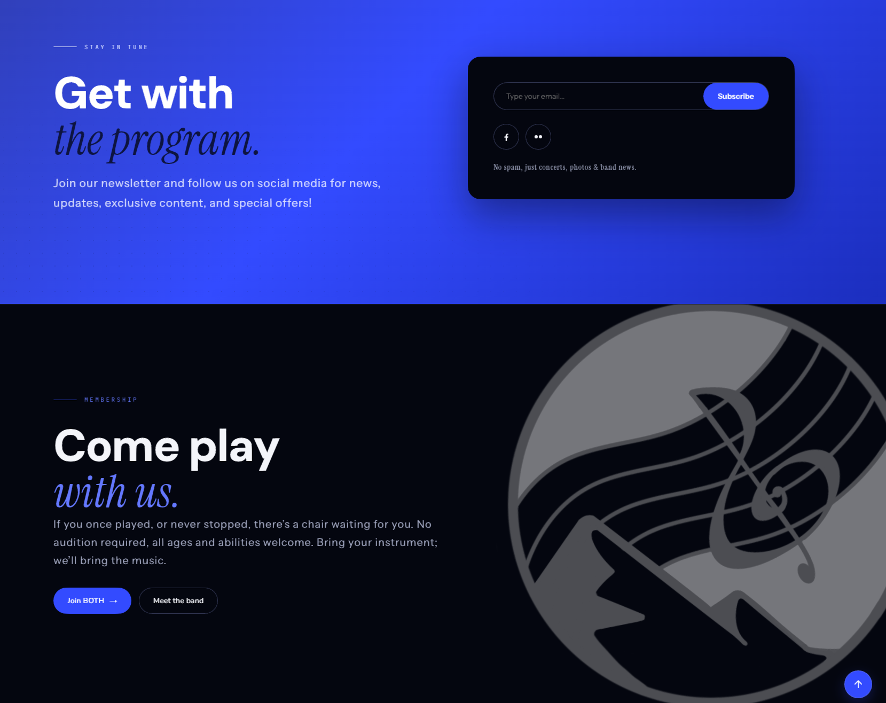
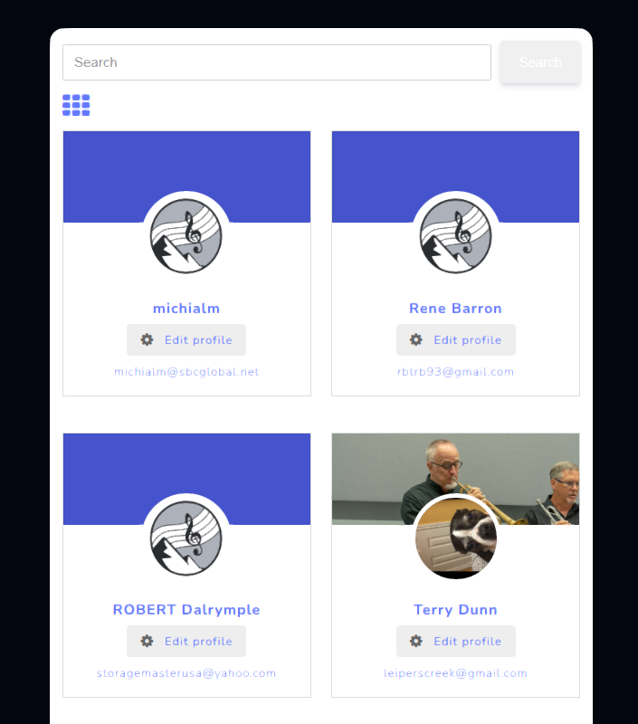
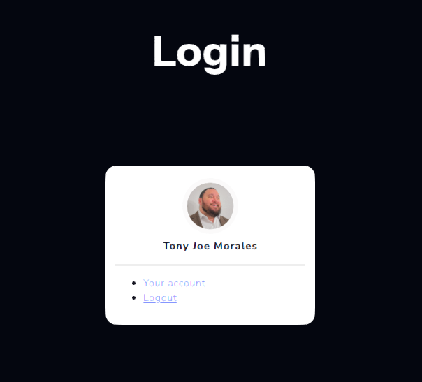
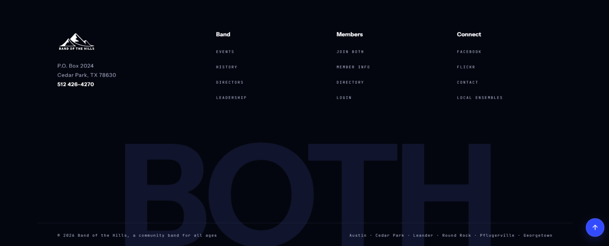

A homepage redesign for a community band, with an automatic event calendar and a members-only login area.
Band of the Hills is a non-audition, all-ages, volunteer wind and percussion ensemble serving Austin, Texas and the surrounding area. It provides free, family-friendly live music for the community.
The homepage was static. Event information lived in a separate list that had to be updated manually, there was no way for members to sign in, and the design no longer reflected the band or kept the season up to date.
How might we keep listeners informed of upcoming events, help new musicians discover and join, and give members ownership of their contact information?
I rebuilt the homepage as a set of clear, modular sections so visitors can quickly understand who the band is and what it offers: the small ensembles that play retirement homes and fundraisers, the sponsors who help fund the season, and a newsletter with an open invitation to join. The result is a consistent structure and a stronger first impression.



I connected the homepage to the band's event calendar, so upcoming concerts appear automatically with a countdown to the next date and links to full details. This replaced a manual process in which staff edited the page before every show. The season now stays current on its own, which cuts upkeep and keeps visitors informed.
I added member login and a searchable member directory, where each player has a profile they can edit themselves. This gives members a private, self-service area the old site did not have. It reduces administrative work and gives musicians a reason to return.


The redesign gives the band a site that maintains itself. The season stays current without manual edits, prospective musicians have a clear path to join, and existing members have a private area of their own. Site engagement and join inquiries both rose after launch.
